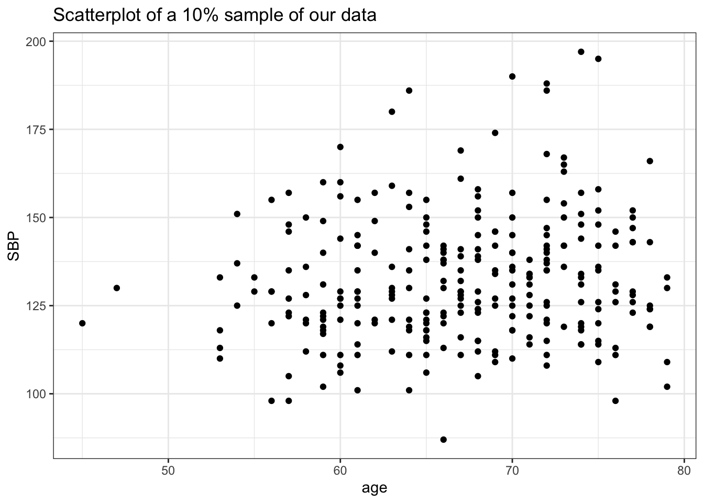
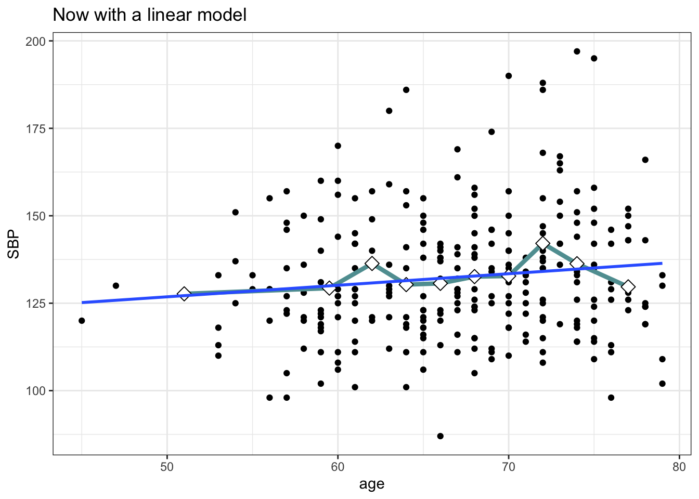
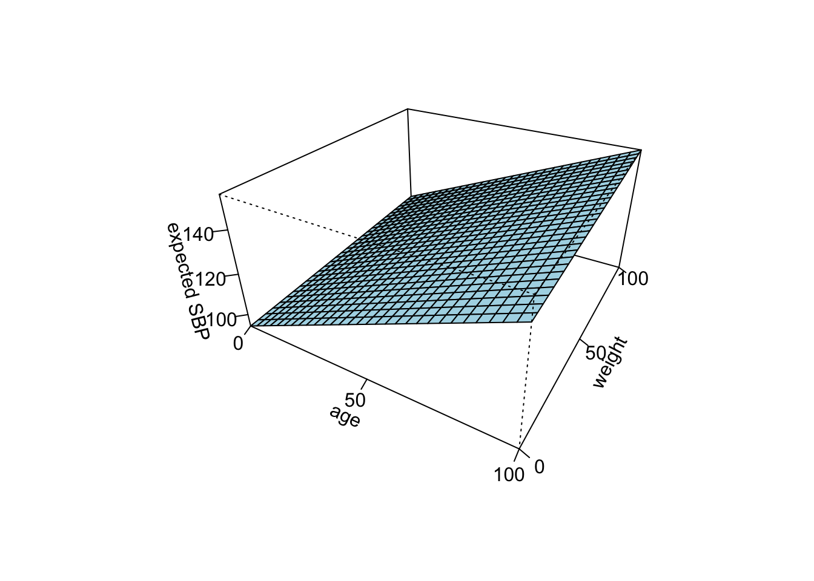

Week 1
August 28 — September 1, 2023
“By now you’ve probably figured out this is a class on linear models and generalized linear models”
Office hours: Rachel: Fridays 4-5pm, in-person; Inte: Thursdays 3-4pm, Zoom; Sal: Tuesdays 4-5pm, in-person
Lab time: Fridays: 2-3:30, usually Kresge LL6.
Use the discussion section of Canvas for random questions so everyone has the same access to information.
We’ll assume that students know random variables, hypothesis testing, basic probability, etc.
Kutner et al’s Applied Linear Statistical Models book will be a helpful reference for the first half of the class, while Agresti’s Categorical Data Analysis will be more helpful for the second half of the class.
While it would be nice for statisticians to be more often than not included in study design, it’s quite usual that statisticians are often sought out by their colleagues who bring them data that they want to analyze. Hence our class will mostly take an interest in the indicated section of the idealized scientific process, and moreover we’ll assume that we’re often not in a randomized- controlled trial.
We’ll focus on associational studies. While it’s almost always the case that when associational studies are performed that investigators are actually interested in are causal effects. However, in this class we’ll tend not to talk about causal effects or “causal” -anything because these days causal inference tends to refer to a specific set of methods used in observational causal inference.
We’ll be concerned quite substantively around confounding.
il famoso Smoking RA Fisher
We’ll talk about a lot of the methods that Ronald A. Fisher developed. Already in the 1900s it was being observed that there was a strong association between smoking and lung cancer. However, Fisher was a smoker himself and posited that the association between lung cancer and smoking could be explained away by some genetic or biological difference between the smoking and non-smoking population (positing some genes that caused people to desire to smoke).
We’re pretty sure that this was driven not by any substance matter expertise, but rather by Fisher’s love of smoking.
Hormone Replacement Therapy
In the mid- to late- 20th century there were a ton of studies linking hormone replacement therapy for older women to better cardiovascular outcomes (lack of coronary heart disease).
However, thankfully due to the Heart and Estrogen/Progestin Study (HERS, in the early 90s) we now know that a lot of those studies were not controlling for socioeconomic status. It turns out that socioeconomic status was highly associated with HRT usage, and associated at least in the US with a lot of better health outcomes across the board.
It turned out that HRT when applied at certain times for some people can actually be harmful — but the point is the picture is much muddier than was initially thought and recommendations were rolled back. Later randomized studies were performed that produced reliable bodies of evidence demonstrating either no effect or in some cases harmful effects.
We’ll use the baseline data from HERS (not so much interested in the HRT treatment effect), but to investigate the research question:
How is systolic blood pressure related to age, independently of other well-known cardiovascular risk factors? (Age, diabetes, smoking, etc.)
Prediction Studies
Typically in prediction settings, there’s no single exposure of particular interest; mechanisms and confounding is treated as less of a concern (if at all), and the main challenge is that we need to take care to not overfit the data.
A major theme of this class will be that different tasks require different analysis strategies and diffrent statistical tools.
Quantifying Uncertainty
Typically standard statistical models have nice theoretical properties because years-and-years ago, we didn’t have much data so people spent their time studying theory instead of data. As a result, we have a lot of nice theories about the uncertainty represented in statistical models.
An example of the kind of uncertainty we might be interested in is shown in this figure relating Alzheimer’s disease rates and exposure to PM2.5.
This figure is taken from the article Long-term effects of PM2·5 on neurological disorders in the American Medicare population: a longitudinal cohort study by Shi et al, Lancet Planetary Health (2020).
Why Learn Methods Before Study Design
An interesting point made is that it’s important to understand the limitations, strengths of methods, what they can and can’t do, and how to use them before designing a study.
Recommended Reading
Kutner M, Nachtsheim C, Neter J, Li W. Applied Linear Statistical Model. 5th edition. chapters 1-3
Shmueli, G. (2010). To explain or to predict? Statistical Science. https://www.stat.berkeley.edu/~aldous/157/Papers/shmueli.pdf
Linear Regression
We will generally be intereseted in the relationship between an outcome \(Y\) and \(p\) covariates or predictors denoted \((x_1, ..., x_p)\).
We generally say that a statistical model has a systematic component and a random component.
We often hypothesize that the “real” relationship between our outcome and predictors might be “super-complex”. Like cancer and environmental exposures might have complex dependencies on genetics, etc.. So sometimes instead of having a systematic component that captures variables in their full complexity, we might prioritize interpretability and we might be satisfied with an imperfect (but more intuitive, simpler) model that might give us some intuition about reality.
The random component may provide both a means to explain everything uncaptured by our predictors, as well as “real” randomness. For example, we might theorize that every time cells divide, there’s some small chance due to genetic drift that cells become metastatic and cancerous which is just random (did a mutation happen that was harmful in the right way in the right spot?).
HERS Study: SBP in Post-Menopausal Women
In a clinical trial of hormone therapy for preventing heart attacks and deaths among 2,763 post-menopausal women with existing coronary heart disease:
- the outcome variable is systolic blood pressure
- the data collected on covariates included age, diabetes diagnosis, smoking status, etc.
- the research question was how is systolic blood pressure jointly related to age, statin use, and other risk factors in this cohort.
Reference: Vittinghoff et al., Regression methods in Biostatistics 2005 https://regression.ucsf.edu/regression-methods-biostatistics-linear-logistic-survival-and-repeated-measures-models
Multiple Linear Regression: Scalar Notation
We consider the model
\[Y_i = \beta_0 + \beta_1 x_{i1} + ... + \beta_p x_{ip} + \epsilon_i, \quad i = 1, ..., n.\]
\[\mathbb E(\epsilon_i) = 0, \, \underbrace{\text{Var}(\epsilon_i) = \sigma^2}_{\text{homoscedasticity assumption}}, \, \text{ and Cov}(\epsilon_i, \epsilon_j) = 0.\]
Typically we assume that the predictors \(x_i\) are fixed and measured without error.
We require that \(p < n\).
TJ notes that \(\text{Cov}(\epsilon_i, \epsilon_j) = 0\) doesn’t imply independence. This is the assumption we’re making for the time-being, but independence will be implied after we later assume that the errors are normally distributed.
Roman asks if we need a conditional mean zero assumption — i.e., \(\mathbb E(\epsilon | x) = 0\)? Rachel notes that \(\epsilon\) and \(x\) are assumed to be independent, so \(\mathbb E(\epsilon | x) = \epsilon\). We will make stronger assumptions later, but we aren’t introducing those yet.
By taking the expected value of both sides, we can equivalently write that
\[\mathbb E(Y_i) = \beta_0 + \beta_1 x_{i1} + ... + \beta_p x_{ip}.\]
The parameters \(\beta_j\) for \(j = 1, ..., p\) represent the change in the expected value \(\mathbb E(Y_i)\) per unit change in \(x_j\) holding the remaining predictors \(x_k \, (k \neq j)\) constant.
One can see this by observing:
\[ \mathbb E(Y_i | x_{i1} = x^* + 1) = \beta_0 + \beta_1 (x^* + 1) + ...\] \[ \mathbb E(Y_i | x_{i1} = x^*) = \beta_0 + \beta_1 x^* + ...\] \[ \mathbb E(Y_i | x_{i1} = x^* + 1) - \mathbb E(Y_i | x_{i1} = x^*) = \beta_1.\]
We most often interested in testing whether \(\beta_j = 0\), interpreted as a test of whether there’s an association between \(x_j\) and \(Y\).
Vector Notation
We can write this model more succinctly by writing:
\[ Y_i = x_i' \beta + \epsilon_i, \quad i = 1, ..., n,\]
where \(x_i = (1, x_{i1}, ..., x_{ip})',\) and \(\beta = (\beta_0, \beta_1, ..., \beta_p)'\), \(\mathbb E(\epsilon_i) = 0\), \(\text{Var}(\epsilon_i) = \sigma^2\), and \(\text{Cov}(\epsilon_i, \epsilon_j) = 0\).
Examples
library(here)here() starts at /Users/cht180/Documents/2023/MethodsBST232library(tidyverse)── Attaching core tidyverse packages ──────────────────────── tidyverse 2.0.0 ──
✔ dplyr 1.1.2 ✔ readr 2.1.4
✔ forcats 1.0.0 ✔ stringr 1.5.0
✔ ggplot2 3.4.2 ✔ tibble 3.2.1
✔ lubridate 1.9.2 ✔ tidyr 1.3.0
✔ purrr 1.0.1 ── Conflicts ────────────────────────────────────────── tidyverse_conflicts() ──
✖ dplyr::filter() masks stats::filter()
✖ dplyr::lag() masks stats::lag()
ℹ Use the conflicted package (<http://conflicted.r-lib.org/>) to force all conflicts to become errorshers <- readr::read_csv(here("data/hers.csv"))Rows: 2763 Columns: 40
── Column specification ────────────────────────────────────────────────────────
Delimiter: ","
chr (16): HT, raceth, nonwhite, smoking, drinkany, exercise, physact, globra...
dbl (24): age, medcond, weight, BMI, waist, WHR, glucose, weight1, BMI1, wai...
ℹ Use `spec()` to retrieve the full column specification for this data.
ℹ Specify the column types or set `show_col_types = FALSE` to quiet this message.plt1 <- ggplot(hers %>% dplyr::sample_frac(.1), aes(x = age, y = SBP)) +
geom_point() +
theme_bw() +
ggtitle("Scatterplot of a 10% sample of our data")
plt1 
plt2 <- plt1 +
stat_summary_bin(bins = 10, breaks = quantile(hers$age, seq(0,1, 0.1)), geom = 'line', fun = mean, color = 'cadetblue', size = 1.5) +
stat_summary_bin(bins = 10, breaks = quantile(hers$age, seq(0,1, 0.1)), geom = 'point', shape = 23, fun = mean, color = 'black', size = 3.5, fill = 'white') +
ggtitle("Now with overlain means for decile groups by age")Warning: Using `size` aesthetic for lines was deprecated in ggplot2 3.4.0.
ℹ Please use `linewidth` instead.plt2 plt3 <-
plt2 +
geom_smooth(method = 'lm', se = FALSE) +
ggtitle("Now with a linear model")
plt3 `geom_smooth()` using formula = 'y ~ x'
lm.sbp.age <- lm(SBP ~ age, data = hers)
jtools::summ(lm.sbp.age)| Observations | 2763 |
| Dependent variable | SBP |
| Type | OLS linear regression |
| F(1,2761) | 77.21 |
| R² | 0.03 |
| Adj. R² | 0.03 |
| Est. | S.E. | t val. | p | |
|---|---|---|---|---|
| (Intercept) | 103.63 | 3.60 | 28.82 | 0.00 |
| age | 0.47 | 0.05 | 8.79 | 0.00 |
| Standard errors: OLS |
So now we would say that \(\hat{\mathbb E}(SBP_i) = 103.63 + 103.63 Age_i\). Though, the intercept is kind of useless since our model doesn’t have any observations for systolic blood pressure for age 0 infants. We might want to fit an age centered model.
lm.sbp.agec <- lm(SBP ~ I(age - mean(age)), data = hers)
jtools::summ(lm.sbp.agec)| Observations | 2763 |
| Dependent variable | SBP |
| Type | OLS linear regression |
| F(1,2761) | 77.21 |
| R² | 0.03 |
| Adj. R² | 0.03 |
| Est. | S.E. | t val. | p | |
|---|---|---|---|---|
| (Intercept) | 135.07 | 0.36 | 378.24 | 0.00 |
| I(age - mean(age)) | 0.47 | 0.05 | 8.79 | 0.00 |
| Standard errors: OLS |
In which case we’d say that \(\hat{\mathbb E}(SBP_i) = 135.07 + 135.07 Age_i\).
Multiple Linear Regression
# fitting a p=2 model
lm.sbp.age.weight <- lm(SBP ~ age + weight, data = hers)
x <- y <- seq(0, 100, length= 30)
f <- function(x,y){ z <- x*coef(lm.sbp.age.weight)[2] + y*coef(lm.sbp.age.weight)[3] + coef(lm.sbp.age.weight)[1] }
z <- outer(x,y,f)
persp(x, y, z, theta = 30, phi = 30, expand = 0.5, col = "lightblue", xlab = "age", ylab = "weight", zlab = "expected SBP", ticktype = 'detailed', nticks = 4)
Indicator / Dummy Variables
We might be interested in modeling categorical variables as well. To do so, we would include dummy variables.
If a categorical variable has \(K\) levels, then we’ll need to compute \(K-1\) dummy variables where the omitted variable is called the “reference level”.
unique(hers$physact)[1] "much more active" "much less active" "about as active"
[4] "somewhat less active" "somewhat more active"hers$physact <- as.factor(hers$physact)
# the reference category will be "much more active" since it's the
# first factor level —
# if we wanted to change it, we could run:
# hers$raceth <- relevel(hers$raceth, "much less active")
# for example.
lm.sbp.physact <- lm(SBP ~ physact, data = hers)
head(model.matrix(lm.sbp.physact)) (Intercept) physactmuch less active physactmuch more active
1 1 0 1
2 1 1 0
3 1 0 0
4 1 1 0
5 1 0 0
6 1 0 0
physactsomewhat less active physactsomewhat more active
1 0 0
2 0 0
3 0 0
4 0 0
5 1 0
6 0 0jtools::summ(lm.sbp.physact)| Observations | 2763 |
| Dependent variable | SBP |
| Type | OLS linear regression |
| F(4,2758) | 0.48 |
| R² | 0.00 |
| Adj. R² | -0.00 |
| Est. | S.E. | t val. | p | |
|---|---|---|---|---|
| (Intercept) | 135.00 | 0.63 | 215.01 | 0.00 |
| physactmuch less active | 0.07 | 1.49 | 0.05 | 0.96 |
| physactmuch more active | -0.90 | 1.26 | -0.72 | 0.47 |
| physactsomewhat less active | 0.96 | 1.06 | 0.91 | 0.36 |
| physactsomewhat more active | -0.05 | 0.91 | -0.05 | 0.96 |
| Standard errors: OLS |
In machine learning this is called “one-hot” encoding.
Polynomial Regressions
lm.sbp.agepolynomial <- lm(SBP ~ poly(age), data = hers)
# we could plug in coef(lm.sbp.agepolynomial)[1] through
# coef(lm.sbp.agepolynomial)[4] into the following equation,
# but it's kind of boring — instead here's a more fun
# looking cubic polynomial we could imagine being the result of
# a polynomial regression:
curve(1 - 2.8*x + 4*(x^2) - .65*(x^3), from = 0, to = 5,
xlab = expression(x[1]),
ylab = "E(Y)")It’s worth emphasizing that usually we prefer splines or generalized additive models to polynomial regression these days since polynomial regression can act strangely.
Marginal Associations
If we have one binary predictor \(x_1\) and one continuous \(x_2\), we might be interested in the marginal association between \(Y\) and \(x_2\). This would look like a model fit with lm(Y ~ x2) and \(x_1\) is not included.
Conditional Association
We might also want to fit models that include \(x_1\), so those could be fit with lm(Y ~ x1 + x2) and this would include an effect for \(x_2\) (one effect, not multiple) that is applied while also considering an effect for \(x1\).